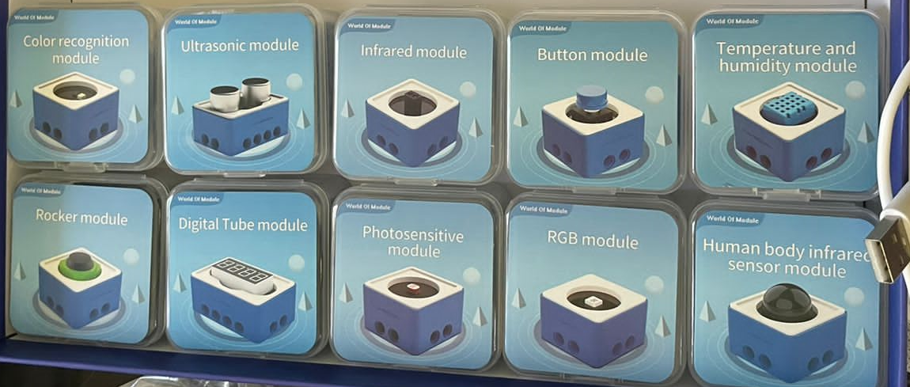
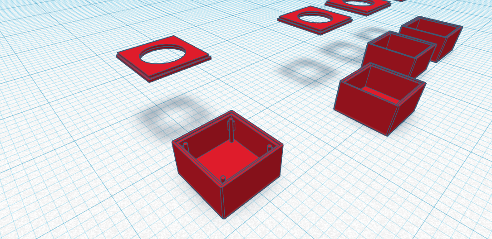
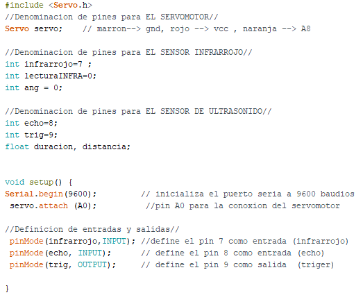
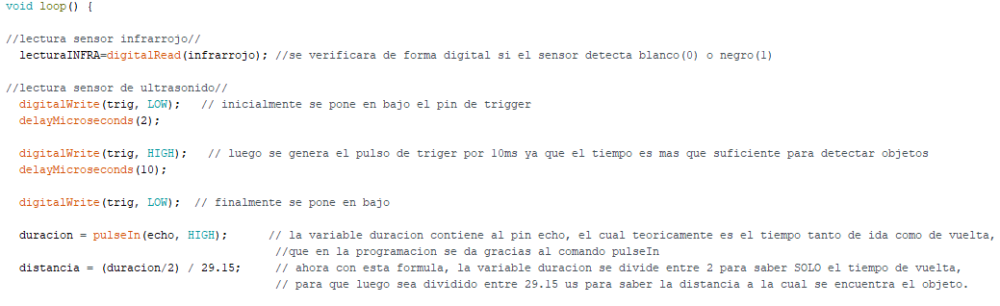
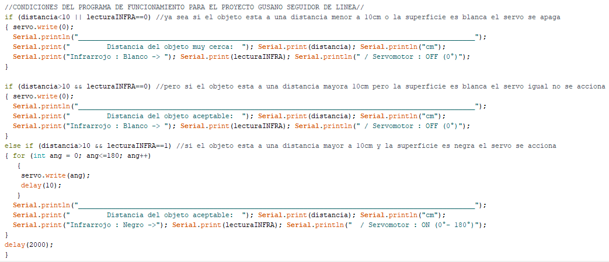
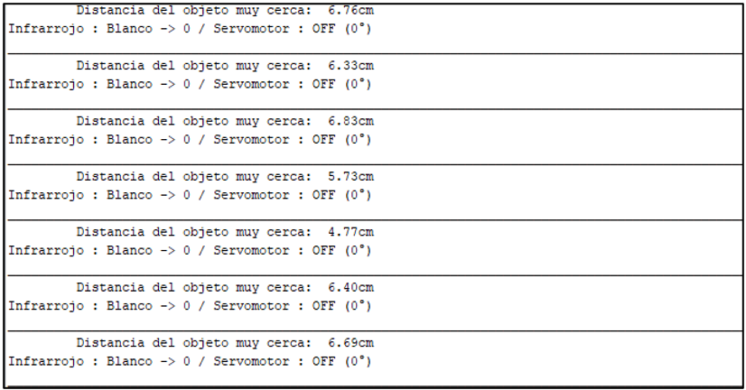
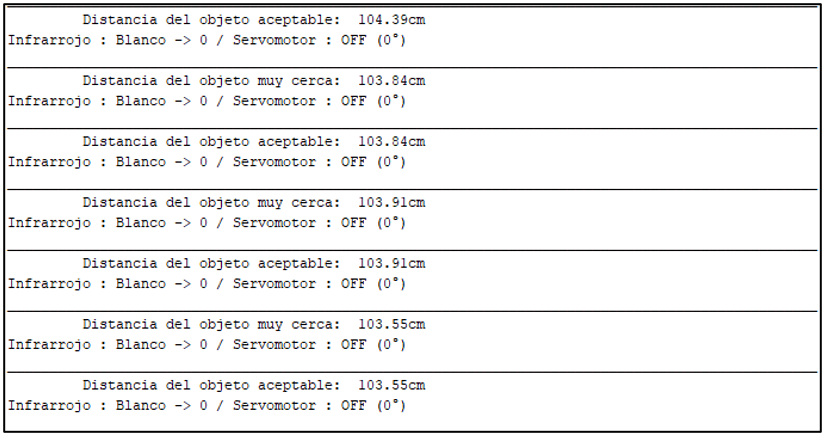
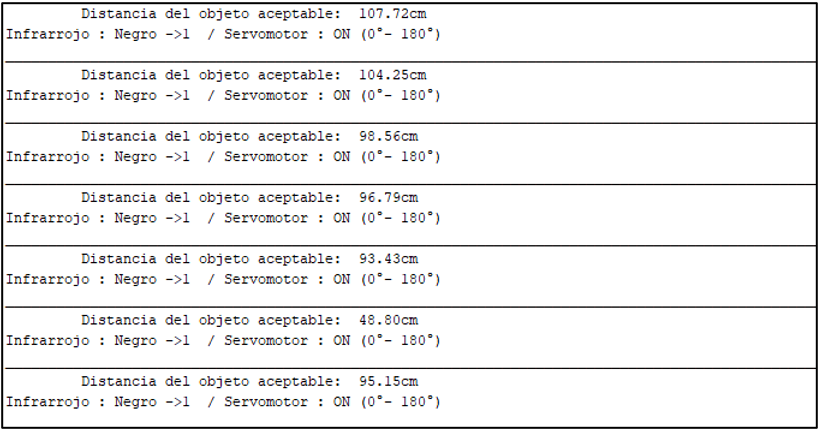

Diseño en tinkercad para diversos sensores y posterior impresión 3D
Inicialmente se trabajo con el software TINKERCAD para poder familiarizarnos con los diseños 3D, en la cual se tuvo
que aprender a manejar herramientas del programa para diseño de piezas 3D ya sea cortes, uniones, mediciones, en relación
al tamaño de los sensores a utilizar las cuales después de enviarlas a una impresora 3D servirá como case protector
de los sensores .


Demostración de funcionamiento del gusano seguidor de linea
Programación de sensores en conjunto en la interfaz Arduino IDE



Monitor serie de la primera condición
Cuando tanto la distancia es menor a 10cm o la lectura del sensor infrarrojo detecta una superficie blanca.

Monitor serie de la segunda condición
Cuando la distancia es mayor a 10 y la lectura del sensor infrarrojo detecta una superficie blanca.

Monitor serie de la tercera condición
Cuando la distancia es mayor a 10 y la lectura del sensor infrarrojo detecta una superficie negra.
